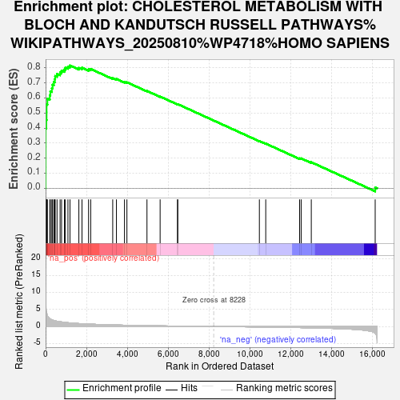
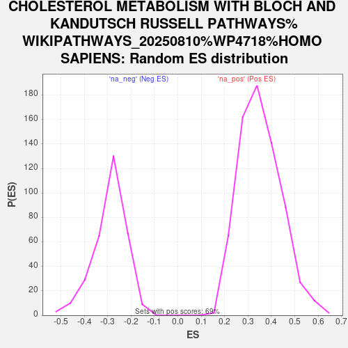

| Dataset | PAL_vs_CTL_ranked |
| Phenotype | NoPhenotypeAvailable |
| Upregulated in class | na_pos |
| GeneSet | CHOLESTEROL METABOLISM WITH BLOCH AND KANDUTSCH RUSSELL PATHWAYS%WIKIPATHWAYS_20250810%WP4718%HOMO SAPIENS |
| Enrichment Score (ES) | 0.8158012 |
| Normalized Enrichment Score (NES) | 2.3120701 |
| Nominal p-value | 0.0 |
| FDR q-value | 0.0 |
| FWER p-Value | 0.0 |

| SYMBOL | RANK IN GENE LIST | RANK METRIC SCORE | RUNNING ES | CORE ENRICHMENT | |
|---|---|---|---|---|---|
| 1 | ACSL3 | 3 | 10.824 | 0.1397 | Yes |
| 2 | FADS1 | 4 | 10.495 | 0.2753 | Yes |
| 3 | SCD | 5 | 9.507 | 0.3981 | Yes |
| 4 | FADS2 | 36 | 4.378 | 0.4528 | Yes |
| 5 | SREBF2 | 49 | 4.094 | 0.5050 | Yes |
| 6 | ABCA1 | 50 | 4.060 | 0.5574 | Yes |
| 7 | ELOVL5 | 89 | 3.147 | 0.5957 | Yes |
| 8 | DHCR7 | 205 | 2.274 | 0.6180 | Yes |
| 9 | FASN | 233 | 2.178 | 0.6445 | Yes |
| 10 | IDI1 | 307 | 1.957 | 0.6652 | Yes |
| 11 | MSMO1 | 339 | 1.895 | 0.6878 | Yes |
| 12 | FDPS | 404 | 1.773 | 0.7068 | Yes |
| 13 | LBR | 451 | 1.678 | 0.7256 | Yes |
| 14 | ACSL1 | 468 | 1.653 | 0.7460 | Yes |
| 15 | HMGCS1 | 560 | 1.535 | 0.7602 | Yes |
| 16 | MVD | 709 | 1.387 | 0.7690 | Yes |
| 17 | HSD17B7 | 781 | 1.334 | 0.7818 | Yes |
| 18 | HMGCR | 920 | 1.227 | 0.7891 | Yes |
| 19 | SQLE | 967 | 1.197 | 0.8018 | Yes |
| 20 | ELOVL2 | 1094 | 1.107 | 0.8083 | Yes |
| 21 | SC5D | 1194 | 1.055 | 0.8158 | Yes |
| 22 | CYP51A1 | 1629 | 0.855 | 0.8000 | No |
| 23 | MVK | 1782 | 0.803 | 0.8010 | No |
| 24 | DHCR24 | 2104 | 0.706 | 0.7903 | No |
| 25 | GGPS1 | 2209 | 0.680 | 0.7927 | No |
| 26 | FDFT1 | 3287 | 0.455 | 0.7321 | No |
| 27 | ELOVL3 | 3469 | 0.428 | 0.7264 | No |
| 28 | EBP | 3863 | 0.370 | 0.7069 | No |
| 29 | NR1H3 | 3982 | 0.353 | 0.7042 | No |
| 30 | SOAT1 | 4964 | 0.241 | 0.6467 | No |
| 31 | CH25H | 5608 | 0.177 | 0.6093 | No |
| 32 | TM7SF2 | 6459 | 0.111 | 0.5582 | No |
| 33 | ACAT2 | 6472 | 0.110 | 0.5589 | No |
| 34 | CYP27A1 | 10468 | -0.148 | 0.3141 | No |
| 35 | NR1H2 | 10780 | -0.172 | 0.2971 | No |
| 36 | ELOVL4 | 12438 | -0.329 | 0.1990 | No |
| 37 | PMVK | 12514 | -0.339 | 0.1987 | No |
| 38 | CYP46A1 | 13010 | -0.398 | 0.1733 | No |
| 39 | MYLIP | 16139 | -1.969 | 0.0056 | No |
